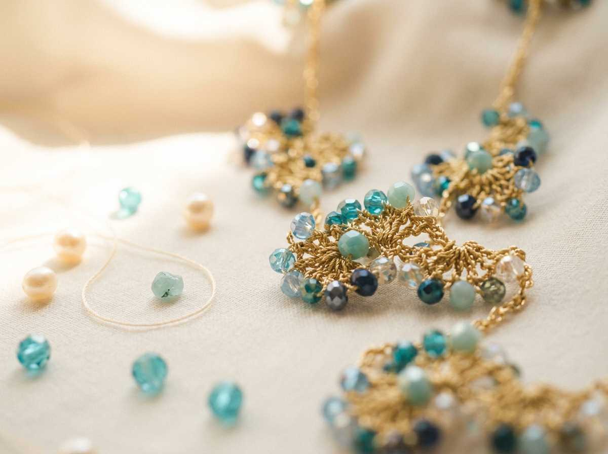

Elegancia artesanal con acento andaluz
El arte sutil... de transformar el tiempo y la dedicación en joyas con alma. Diseños creados con absoluto mimo y profesionalidad para acompañar tu estilo con distinción.

De Zahara a Sevilla, con las manos siempre llenas de hilo.
"Nací en Zahara de la Sierra, uno de los pueblos más bonitos de España. Allí, entre callejuelas blancas y la sierra, se me despertó la curiosidad por crear. Llevo más de 40 años haciendo cosas con mis manos: coser, ganchillo, pintar, incluso repostería. Tuve una tienda de lanas en Sevilla, y lo que más disfrutaba era dar cursos a mis clientas. Ver cómo aprendían y se ilusionaban era mi mayor recompensa. Ahora, ya jubilada, no puedo parar. Mis collares nacen por las noches, sentada en la mesa camilla. Me inspiro viendo videos en YouTube, probando cosas nuevas. Aunque vivo en Sevilla, mi esencia sigue siendo de pueblo. Por eso mis collares y pendientes tienen ese punto flamenco, alegre, pero también algo de la calma de la sierra. Me encanta el color, los toques que recuerdan a las ferias y a las flores del campo. Compro los materiales en tiendas de Sevilla y, si no encuentro lo que busco, pido por internet. Pero cada cuenta, cada hilo, lo elijo yo personalmente. La creatividad no entiende de edades ni de fronteras. Y yo, desde Zahara hasta Sevilla, todavía tengo mucho que contar,"Ver la colección
Encuentra el tuyo
Filtra por color, tipo o estilo hasta dar con el que te enamore.
Precios con IVA y gastos de envío incluidos.
Cada pieza cuenta su propia historia
100% confeccionado a mano
Cada cuenta, cada nudo, cada detalle está puesto con intención. No hay dos collares exactamente iguales.
Materiales seleccionados
Perlas recicladas de alta calidad, cristales facetados. Materiales que brillan y duran.
Con embalaje con mimo
Cada collar sale con su caja y su tarjeta. Perfecto para regalar o para darte un capricho bien presentado.
Hecho en Sevilla
Sabes exactamente quién ha hecho tu collar, dónde y con qué. Sin intermediarios, sin fábricas.
Para cualquier ocasión
Desde una cena de gala hasta un paseo de domingo. Hay un collar tuyo para cada momento.
Lo que dicen las que ya llevan uno
Nada como saber que llevas algo hecho con cariño.
"Me regalaron el collar Nicole por mi cumpleaños y me convina con un monton de ropa. La calidad es increíble para el precio, y el embalaje era muy bonito."
"Pedí uno personalizado para la boda de mi primo. Cristina me escuchó, me propuso opciones y el resultado fue exactamente lo que imaginaba."
"El collar Ingrid es exactamente como en las fotos, pero en persona brilla muchísimo más. Me encanta que sea hecho a mano, se nota en cada detalle."
¿Te ha gustado algo? Escríbeme sin compromiso
No hay tienda online, porque prefiero el trato directo. Escríbeme por email y te cuento todo sobre el collar que te ha llamado la atención.